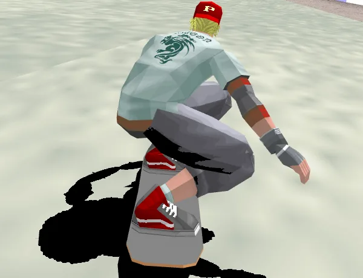
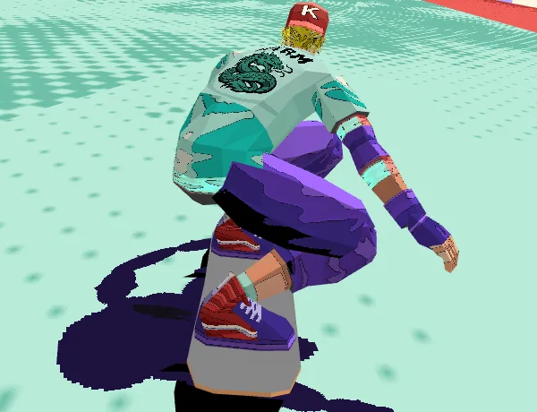

FOR ARTISTS AND MODDERS
Texture packs
Replace a game's textures and 2D art with your own images, and watch each change in the running game.
Replace a game's textures and 2D art with your own images, and watch each change in the running game.
Images can be any size. reModel ships no packs: you dump the textures from your own ROMs, repaint or upscale them, and put them in the game's pack folder.


Top Skater's Novice course with the cel-shaded showcase pack, a local project made with the studio tools. It isn't a download.
The player loads a pack for each game and swaps in a changed image about 0.15 s after you save it, so you can paint with the game running. A look adds ink outlines, toon lighting and halftone on top. Packs change only the picture: the game's state hash stays the same.
Command-line tools for pack projects: a map of which texture appears where, a catalogue of everything a game shows, checks that catch broken images and seams, and saved scenes for before-and-after renders. They're built from source; the release builds have the player only.
How to make one: docs/texture-packs.md. The studio: docs/uplift-studio.md.